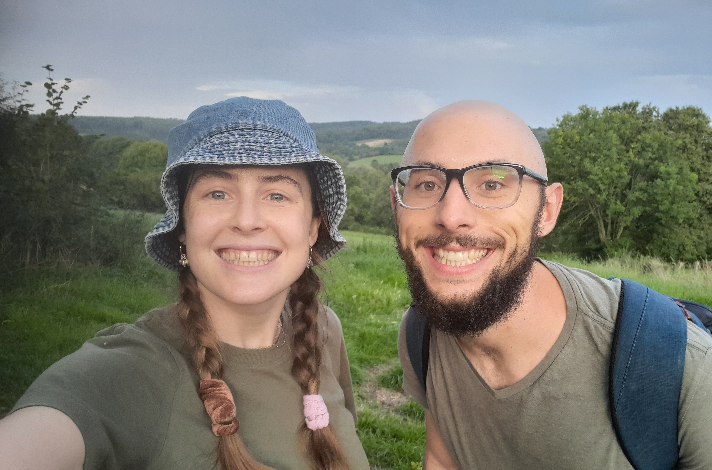

My Story

I was born in England, but moved to the Eastern Cape in South Africa when I was 7. I grew up in East London until I finished school.
In 2016, I moved to Stellenbosch to study engineering and start a new chapter of my life. In 2021 I met Magdaleen, and we got married the next year. We live on a farm, just outside of Stellenbosch, with a beautiful view of the mountains.
I am a Christian, who believes in the God who created the heavens and the earth.